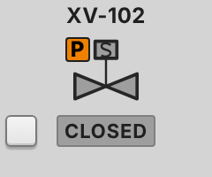

<figure class="card" id="Templates_Valves_Valve_Solenoid"><div class="view" style="width:240px;height:200px"><div class="stage" style="width:120px;height:100px;transform:scale(2.0000)"><div class="hit" style="position:absolute;left:31.670%;top:18.000%;width:36.670%;height:44.000%;pointer-events:none" title="click: open dynamic window"></div></div></div><figcaption><code>Templates/Valves/Valve_Solenoid</code><br><b class="ok">T_DValve</b> &middot; dock <code>dw_ValveDiscrete</code><br>click symbol: open dock &middot; dbl-tap (touch, Manual, canCmd): toggle<br><i>render of the real view</i></figcaption></figure>